KinectoTherapy- Making rehabilitation Fun, Motivating and Rewarding
Year: Jan '12 - Present
Role: Developer, 3D-2D Animator and Researcher
Team Size: 2
Website: www.kinectotherapy.in
KinectoTherapy uses Microsoft Kinect's motion sensing technology to create an Intelligent Motor-Rehabilitation system which gamifies the exercise routines and provides effective feedback. The aim of this project is to make the unexciting rehabilitation process fun and rewarding by incorporating suitable motion-sensing serious games.
Conventional rehabilitation is strenuous and monotonous and a physically challenged person needs to feel motivated throughout to benefit from the process. Games make users feel engaged but popular games (1) lack essential components for rehabilitation. Attempts have been made to develop appropriate rehabilitation games (2) but they lack entertainment and engaging qualities.
KinectoTherapy is a motor rehabilitation tool that mixes useful elements of both (1&2) creating meaningful play and can be used for all age-groups.
KinectoTherapy was demonstarted in Microsoft Imagine Cup 2012 (India) competition under ‘Accessibility’ category and was adjudged second in the National Finals. The project has also got wide Media Coverage in forms of News-Paper articles, Journal articles and was aired on CNBC TV18's show Young Turks.
More details about the project can be found at www.kinectotherapy.inFew screenshots of the Exercise Routines
Algorythmus
Year: Dec '11 - Present
Role: Co-Founder, UI designer and Front-end developer
Team Size: 3
Website: www.algorythm.us
As a student still pursuing my undergraduates, I had the opportunity to go through the placement fair in my college and found that most students were found lacking in their knowledge of algorithms. Algorithms form a basis of recruitment for any good company but learning them is, at times, difficult and uninteresting. Through this site, we plan to build a community which aims at making algorithms a 'fun to learn' activity but at the sametime is accurate and to the point using some of the visual element properties that we have integrated in the platform we are building.
As algorithms need a more hands on approach, the site has a completely new method of Interaction using properties of the HTML 5 Canvas class and will not depend on videos, a trend which is quite visible in today's online correspondence classes. It also host a Text To Speech (TTS) converter. The advantages of these features are clear, it provides a more internationalized way of presenting information to students, and topics which face the problem of 'visualization' can be easily addressed to by making visual elements and interactions which are supported on the HTML5 canvas. The site is open to the public for creating and editing pre-existing slideshows. I always believed that teaching and learning is a collaborative affair and this product heavily inclines on this ideology.
Currently, we are planning to support algorithms; however the same technology can be used to support a wide variety of educational courses.
My work in this project has been to ideate and to figure out the feasibility and limitations of the project along with designing and developing a front end which users can relate to. Since this is a relatively new method of creating presentations for teaching, we adopted the Ajile methodology towards making this product and have made significant progress in developing the product. Algorythmus is in its first alpha stage.
ROWDI - Reading Our World Digitally
Year: May '11 - July '11
Role: 3D-2D Animator and Researcher
Team Size: 3
This project basically focuses on maximizing the learning curve of a student using interactive digital world as a medium.
We created 2 motion sensing games based on Microsoft Kinect technology. The aim of these Kinect-enabled games is to help children learn or gain knowledge of a literature book through natural use of their body to play games. Kinect is a controller free, full body motion sensing gadget by Microsoft. This has been used along with a PC or a laptop running windows to play a game on the system using your own body as a controller.
This project is sponsored by Carnegie Mellon University (Pennsylvania) and the hosting site is McPherson Middle School (Kansas)
Use of Kinect to play a game is a good approach since the target users of this games are children in their 5th or 6th grade. Children in such age are very active and would prefer to have physical activities as compared to sitting down and learning. The games takes advantage of this fact and is an approach to use that activeness in such a way that it is useful for both learning and tries to make education more relevant through entering into their favorite field.
Till date, we have sucessfully completed 2 games based on the novels 'Kidnapped' and 'The Evolution of Calpurnia Tate'
Screenshots of the games
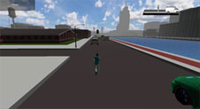 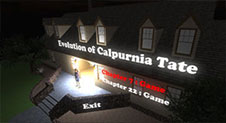 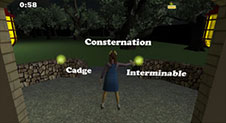
The project also proposes a more suitable environment to host such educational games and has undergone two dry runs till date with a major deployment coming up soon. Our aim is to see how useful/effective these games are when compared to the generic educational games present in the market today in terms of visualisation of the story/scenes and the overall literature/science learning objectives.
Screenshots of the Dry-Run
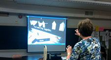 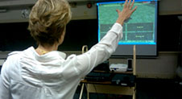
MILLEE - Mobile and Immersive Learning for Literacy in Emerging Economies
Year: May '09 - Present
Role: Researcher and Graphics Developer
Website: www.millee.org
The aim of this research project is to develop immersive, enjoyable, language learning games on cellphones, modeled after the traditional village games that rural children find familiar adopting a human-centered approach. These games enable children in the developing world to acquire language literacy in immersive, game-like environments.
The Project is mentored by Prof. Matthew Kam (Human Computer Interaction Institute, Carnegie Mellon University, Pittsburgh, USA)
We followed a human-centered design process, in which we consulted experienced local English teachers on our instructional and game designs. By field-testing with multiple communities, we observed user behaviors with the technology that generalize across settings. Through ethnographic studies, we also studied how social factors such as gender and caste affected MILLEE gameplay in everyday rural environments.
At present, we have developed 13 J2ME games for Nokia 3110 cellphone. These games have been successfully deployed in Andhra pradesh.
Screenshots of some MILLEE games:
| 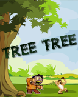 | 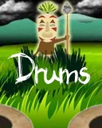 |
Pictures from deployment:
| 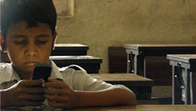 | 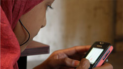 | 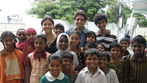 |
USID Gurukul
Year: Aug '10 - Sept '10
Role: UX Researcher
Team Size: 6
USID Gurukul 2010 was an inspiration taken from “Gurukul”, a school concept from the ancient times.
To encourage a collaborative and immersive learning experience, the Shishyas(students) were divided into 8 teams with 6 students in each from the discipline of design, technology, management and social science.
Each of these teams was assigned two Gurus under whom we were to achieve realistic goals over a period of 2 weeks.
It was more of a platform for students to Collaborate, Explore, Experience, Learn and Create, design solution for existing social problems under the mentorship of accomplished practitioners, researchers, academicians and professionals which would then facilitate social-economic development and better quality of life.
I was one of the 48 students selected from all over the country for this project. We were 6 people in the Team with two Gurus (mentors):
- Nachiketa Tiwari- Visiting Professor, IIT Kanpur
- Sanjay Rishi- Senior Faculty & Executive Coach in the Leadership Practice, iDiscoveri Education
Our team developed an Emergency Response Decision System. More emphasis was laid on the "Golden hour" (–it refers to a time period lasting from a few minutes to several hours following traumatic injury being sustained by a casualty, during which there is the highest likelihood that prompt medical treatment will prevent death).
The final end products were:
- Design of a company (read ABC medical service) along with a business proposal with detailed market analysis.
- Patient monitoring device : Concept design
- Design of a portable Operation theatre.
- 3D prototype of a Patient POD for traffic congested areas.
Patient monitoring device: Concept design
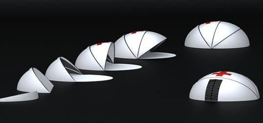
Portable OT: Concept design
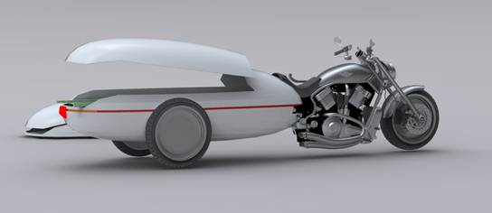
Portable patient pod: Concept design
Infrared Remote for Computers
Year: Sept '10 - Dec '10
Role: Coder/Developer
Team Size: 2
The aim of this project was to control a desktop or a Laptop with a simple remote, like the one we already use for our TV-set. The buttons in the remote can be configured to either start applications, swap between windows, flip pages during presentations, turning off the system and many more. Almost any application that uses shortcut keys and mouse can be controlled using this setup.
The conventional Infrared TV Remotes communicates via RC5 protocol. Exploiting the full duplex propert of the Sound card, we created a small Infrared reciever which transmitted the decoded signal to the Computer via 'Microphone input port'. On recording the pulse sent from the Remote using Audacity, we found the following manchester code for 'Menu' button:

Note: the hex code transmitted by the remote for the same is 0x1020
Following this, we implemented an algorithm in Matlab which simulated the working of an TSOP to decode the signal for respective key pulse by recording 3 sec of pulse sent from the remote.
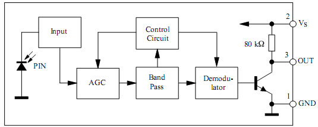
(Block Diagram for a TSOP)
Working on the above steps, we decoded all the signals sent from the remote and computed the final config file for the Remote.
Final configuration for the 'Computer' Remote:
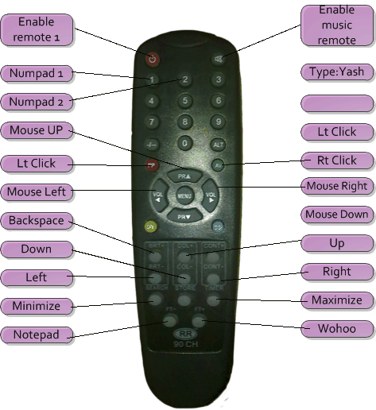
Download the full project report from here.
2D to 3D image conversion
Year: Jan '11 - Apr '11
Role: Coder/Developer
Team Size: 2
This Python - OpenGL algorithm enabled visualizing 2-D images in a 3-Dimensional perspective. It takes in an image and extracts the position and colour of all the non-white pixels from the image. It then creates a unit cube in 3-Dimensional space for each non-white pixel extracted. The cubes are then appended together and the image can then be displayed as a 3-D solid formed from the cubes. The camera angle is initialised in such a manner that when the program executes the user can actually see the raised building like structures formed by converting the 2-D image into 3-D.
To give the final output a realistic feel, a texture-mapped plane was added that served as a floor beneath the image in 3-D space. Functionalities have been added to the keyboard that allows the user to move the camera angle in various ways. The instructions for using the camera with the help of the keyboard keys are displayed in a window that is made by using the 'Tkinter' GUI library supported by Python.
Concepts and Techniques Used:
- Data Visualization in 3D:
- Complex model-Navigation and Viewing:
- Texture mapping:
- Lighting:
The program takes a 2D image with white background. It then extracts all the non-white pixels and creates a 3D world made of cubes. We used the gameobject.vertices3 module to draw objects in 3D. All the methods provided by this class have been used to draw and render the cubes in 3D.
We have used the gameobject.matrix44 module to implement the camera movement in 3D space. As soon as a key is pressed to rotate/move the camera, the rotation/movement direction is incremented or decremented by 1 unit.
Rotation matrix is then calculated and multiplied by the camera matrix whereas the movement values are added into the camera matrix. The time between 2 consecutive key presses is recorded and multiplied with the rotation and camera matrix to move the camera in the 3D space.
To give the 3-D word a realistic feel, a texture has been mapped onto the floor over which the Cubes corresponding to the image are placed.
As the camera moves away from a set of cubes, their colour diminishes by a little extent to make the lighting realistic. There are three light colours for each light- Ambient, Diffused and Specular and four (add Emission to the list) for each surface. The light parameters are set by glLight and the surface light parameters are set by glMaterial. Only one light source (LIGHT0) has been enabled and used.
Sample Screenshots:
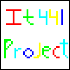 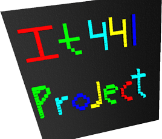
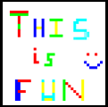 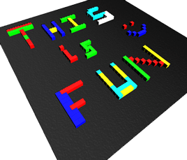
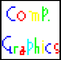 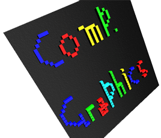
Playpower
Year: Feb '10 - Oct '10
Role: Engineering and Game Design Research Assistant
Website: www.playpower.org
The Playpower Foundation is using a US$12 computer as a platform for 8-bit learning games in order to improve educational access for millions of children around the world. Motivated by the availability of this radically affordable platform, the goal is to design and discover high-quality 8-bit learning games and make computer-aided learning affordable for people everywhere.
The games are developed for 8-bit gaming consoles that are currently sold in dozens of developing countries for as little as $10.
The Playpower team is lead by Derek lomas (PhD student, HCI, Carnegie Mellon University, Pittsburgh)
We developed 3 games on the 8 bit platform which were then tested at Ahmedabad, Bengaluru and Mumbai.
Screenshots of the three 8-bit games:
| 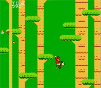 | 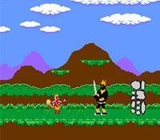 | 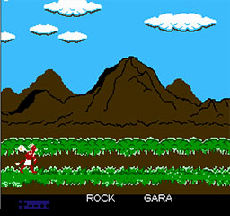 |
Alternate Shopper
Year: June '10 - July '10
Role: UI designer
Team Size: 2
The Alternate Shopper basically addresses the problem of "consumerism" and supports "Alternate economy". It gives the user options for buying their requirements from places like local stores. Along with this it supports the "Alternate economy" movement and, with time, it will create a gathering of people supporting this movement. It is a portal which gives the user the option to select the best local product nearby.
The aim is to decrease the consumption of mass produced goods by "providing consumers with different and better alternatives" prepared in small-scale-industries or local shops. Doing so we promote the idea of "Alternate Economy"
In this fast life, people don't have the time to search for a place which will supply the best quality of product they need. So they end up going in a supermarket or a shopping mall which thrives on mass produced goods. So here the idea fits into the need. It provides the user with different choice to shop rather than the conventional supermarket choice.
Importance of Alternate shopper:
The rules of economy at present strongly support mass production. The economy however is money centric something that has made the developed countries what they are today. However what they failed to realize was that post development, the development of the larger part of the society also gains equal significance. However this is not what the economy supports. With mass production they take away the employment of many locals who could have earned a living out of their own local business. Come to think of it, with the increase in the local businesses there will be a definite decrease in the consumption of mass produced products.
The idea is to build a web portal which will grow on the inputs provided by the people. To be more precise, It's a portal or a search engine which gives you the required groceries in a place near you rather then supermarkets or shops with mass produced goods. The code for the plan is "Aim for the local business but never sacrifice on the quality". Hence it lists down the places based on the reviews of the place (given by the people!).
The app. also allows you to comment, give feedback or "favorite" a place. It also hosts a shopping list space where you can put up your local shopping list and help the locals around you. You login and you have access to all of this and more articles, debates etc about "Alternate Economy" and similar topics which are present on the site. The site acts like a database collecting people who support this movement and who knowingly or unknowingly, but with the help of the app, want to decrease the consumption of mass produced goods. This app. leads to a site (read-the web portal) that is active about uniting the people together as a force as with numbers come strength and with this strength we can visualize a city-wide and slowly a country-wide decrement in the consumption of mass produced good. The app. is the beginner the site is the final step.
Mobile App Design:
It basically starts with an application on your cell or PC. It asks you a basic question "What do you want to shop?" and "Where are you most likely to visit?", like for example you want to shop for some grocery and you give in "BigBazaar/or any other super market". The app basically gives you options that are local to the place where you are shopping (in same radius) and which work on a private or individual level. It also gives in other basic info as in "Benefits of buying from this store" along with basic information regarding the store and its quality.
Now as stated earlier, it gives you the best local option nearby, which is provided by the "favorite" option. Here the user himself based upon his experiences rates the place. On searching, the place rated the most is featured first on the list. Another feature is "Add new Alternative places" which allows different users to add new places to the database. Additional space is given for each place so that people can give their opinion about the place.
Sample screenshots of the App:
| 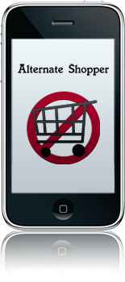 | 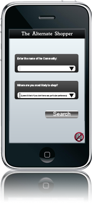 | 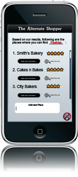 | 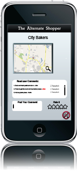 |
Showcase of some of my Freelance Projects
Apart from Academic projects, I have done Freelance Projects related to Web-Mobile Design, Game Design, Software Design and Corporate Branding and Identity. Some of them are mentioned below.
Synapse
www.synapse.daiict.ac.inSynapse is the Techno-Cultural Fest of DAIICT. My responsibilities were as webmaster and for the design and ideation of the site for the years 2010 and 2011.
Algorythmus
www.algorythm.usMy work in this project has been to ideate and to figure out the feasibility and limitations of the project along with designing and developing a front end which users can relate to.
KinectoTherapy
www.kinectotherapy.inThe website is an essential part of the Kinectotherapy. Users can use this site to stay tuned to the latest updates and news related to the software and also can login to check all of their personal logs.
My Personal Portfolio
www.yashsoni.com
The current site which you are viewing is My Personal Portfolio. Everything from the Sprites, Artwork, Animations, Development has been entirely done by me.
Hungry Panda
Hungry Panda and Bhookh Mitane Wala are eating joints located in Gandhinagar and Ahmedabad respectively.The aim of this project was to establish the Identity of these new Restaurants by creating elegant and catchy Print designs and Ads which appeal to the younger generation.
Hungry Panda and BMW (Bhookh Mitane Wala)
Year: Dec '11 - Apr '12
Role: Corporate Branding,Graphic and Print Design
Team Size: Solo
Hungry Panda is a Multi-Cuisine restaurant located in Infocity,Gandhinagar. The aim of this project was to establish the Identity of this new Restaurant by creating elegant and catchy Print designs and Ads which appeal to the younger generation.
Undertaking the task in a strict deadline driven environment, I created the following designs for Hungry Panda.
|
|
Bhookh Mitane Wala (BMW) is an eating joint in IIM Ahmedabad. The aim of this project was also to establish the Identity of this new eating joint. As almost all of the customers to BMW are college students, all the designs were made which would appeal to them.
I successfully created the following designs for Hungry Panda.
|
|
Few designs of Hungry Panda and BMW